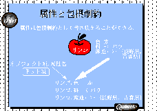

<html>
<head>
<title> Slide No.10 </title>
</head>

<frameset rows="430,130">

<noframes>
<body>
<a href="GIF/slide10.GIF"></a>

<a href="AU/voice10.au">
	</a>[369K]<p>
<!--		-->
<a href=""> 属性は包摂制約として書き換えることができます。</a> <p>

先ほど属性項を説明した時に、りんごの
「色は赤、バラ科の一種、産地は長野県と青森県」という属性は、
OHP のりんごの絵の右側にあるように、記述されることを説明しました。<p>

<b> Quixote </b> では、<a href=""> ドット項 </a> という
「オブジェクト項、ピリオド、属性名」からなる項を使って、
属性を包摂制約に書き換えられます。例えば、先ほど挙げた例は
矢印の下のように書き換えられます。<p>

この変換によって、全ての属性項は包摂制約に書き換えられ、
<b> Quixote </b> は包摂制約に基づいた制約論理型言語と
考えられます。
<p>
<!--		-->

<hr>
<a href="slide11.html" target="_top">次の OHP へ</a>
<br><br>
<a href="slide9.html" target="_top">前の OHP へ</a>
<br><br>
<a href="HomePage.html" target="_top">OHP の一覧へ</a>
</body>
</noframes>

<frame src="onlyslide10.html">
<frame src="buttonexpla10.html">

</frameset>

</html>
